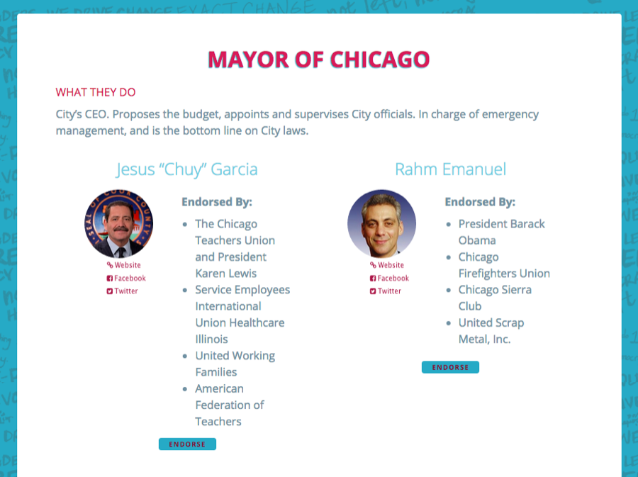
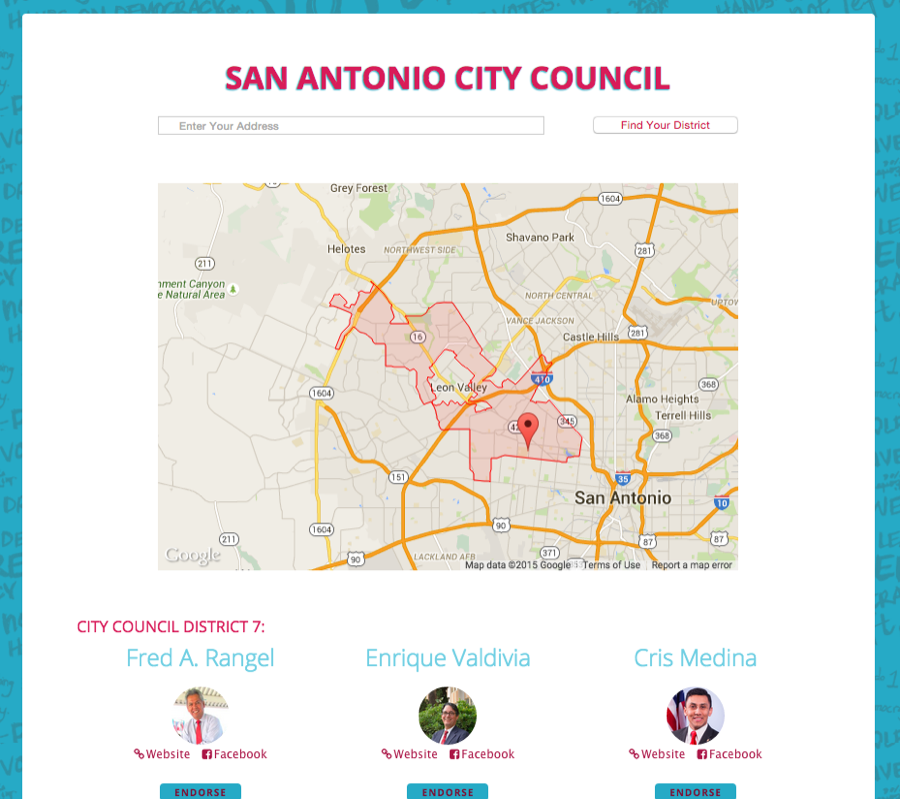
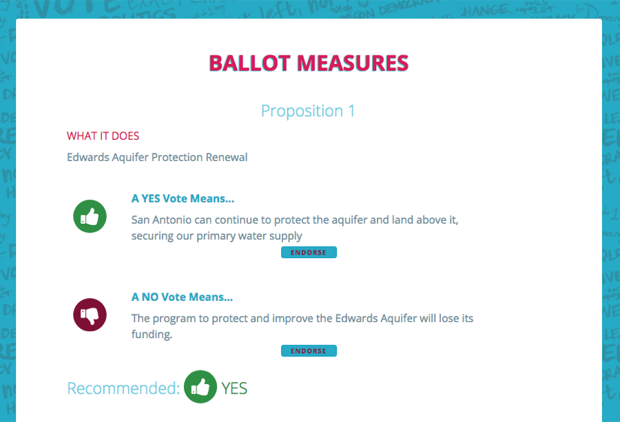
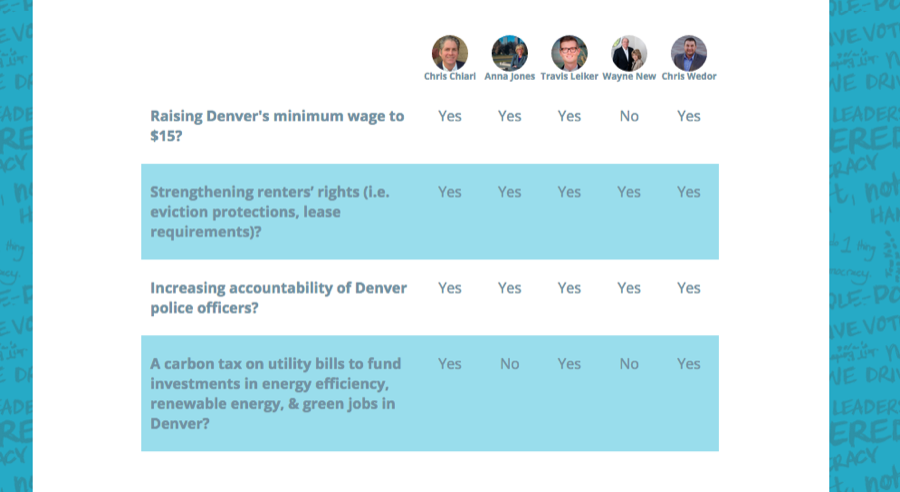
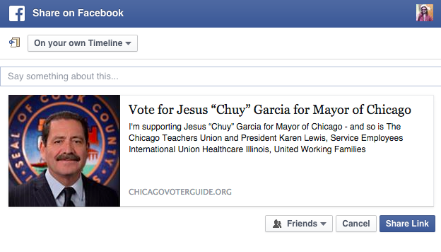

Nº 06 · Habitat I — Democracy & elections
Municipal Voter Guides
Designing a better municipal voter guide - with the Bus Federation.
- First observed
- 2015
- With
- Chicago Votes, New Era, MOVE SA
I created a framework for quickly turning municipal candidate data - kept in spreadsheets - into mobile-first single page applications that could be hosted on Github Pages (for free).
Working with Bus Federation affiliates Chicago Votes, New Era Colorado, and MOVE San Antonio, I created three different voter guides for Chicago, Denver, and San Antonio's municipal elections. Each election featured a mayoral race, city council races (with an address-to-city-council-district lookup tool), and several ballot measures. Each candidate or measure also featured a "share" button which produced candidate specific opengraph and twitter card content.
The static HTML sites were built using Rake and Ruby Templates, along with SASS, the Google Maps API, and jQuery
Plates · from the field





Field notes